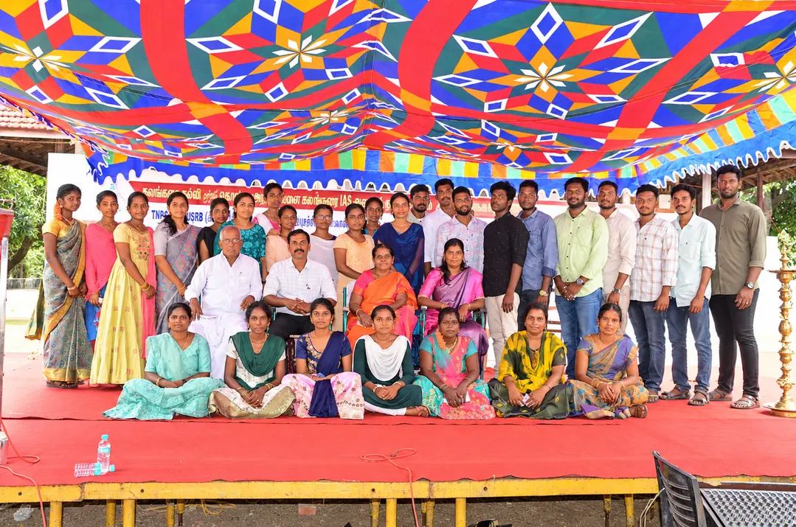
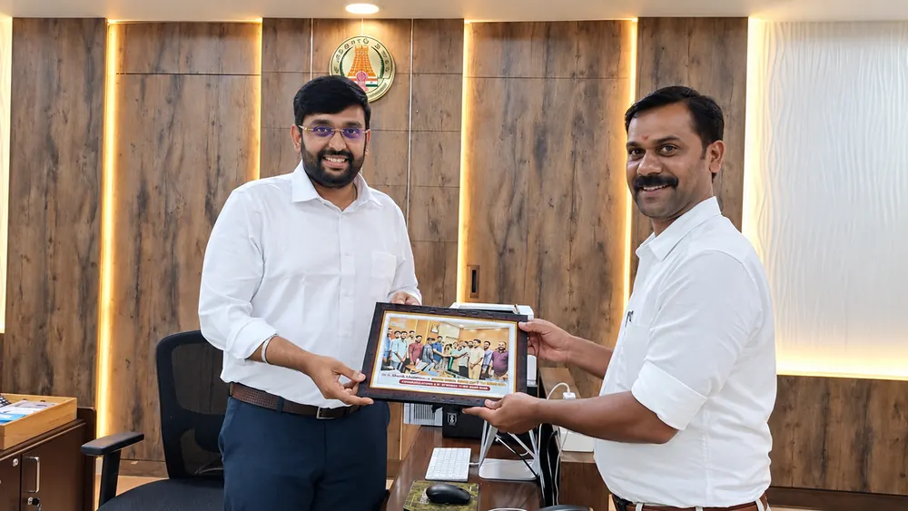
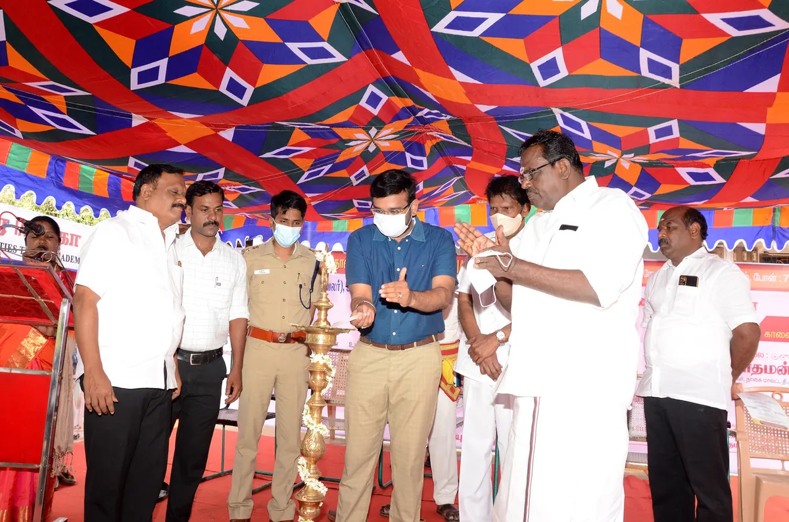
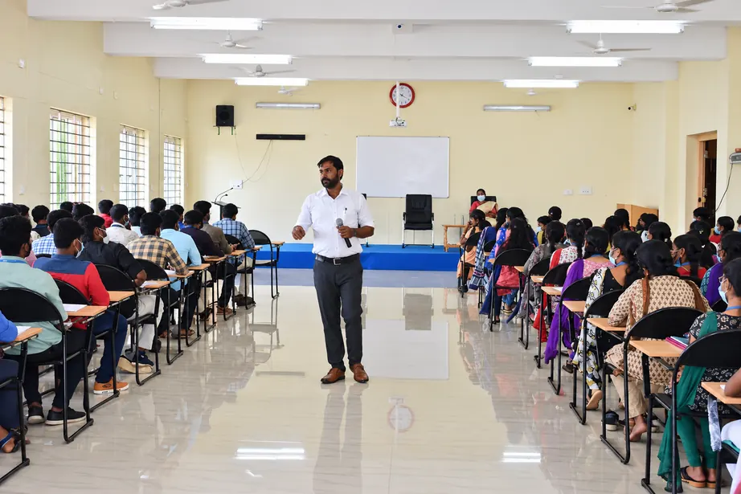
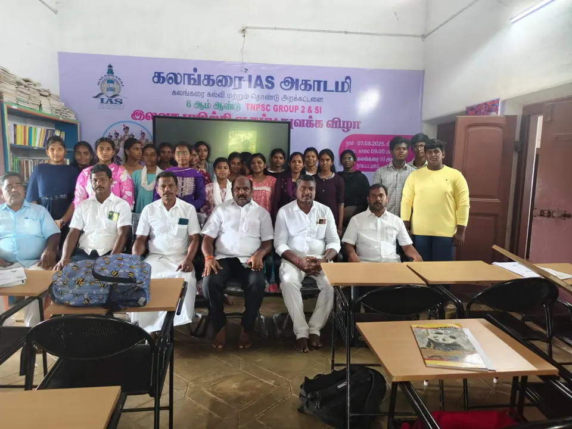

Lighting the Path to Equality
Nine years of service, empowerment and social impact in Nagapattinam, Tamil Nadu.
Talent is everywhere. Opportunity should be too.
Kalangarai Charitable and Educational Trust, established in 2018, works to empower students, youth, women and economically disadvantaged communities in Nagapattinam and its surrounding areas, with special attention to rural and first-generation learners.
Our key focus areas are Education, Health & Nutrition, Skill Development, Youth Empowerment, Livelihoods and Community Welfare. Through Kalangarai IAS Academy and NEET Academy we provide free coaching and guidance for TNPSC, TNUSRB, SSC, RRB and NEET examinations, and we run Nagapattinam district's first free residential competitive examination training centre.
The Trust's registered areas of work are Differently Abled, Education & Literacy, Labour & Employment, Women's Development & Empowerment and Youth Affairs.

Our Vision
To build strong, inclusive communities through education, health, sustainable livelihoods and community development.
Our Mission
To empower communities through quality education, health and nutrition, skill development, livelihood opportunities and community-based interventions, enabling individuals and families to live with dignity and opportunity.

“A student's dreams should never be limited by the economic circumstances of their family.”
During my own journey preparing for competitive examinations, I saw many talented rural students struggle for lack of proper guidance, coaching, study materials and financial support. It led to a simple question: why should a student's talent be held back simply because they cannot afford it?
That question became the foundation of Kalangarai's journey towards free education, competitive examination coaching, career guidance and community support. We also realised that students need support beyond education — a safe environment, nutrition, encouragement and mentoring can make a meaningful difference in a child's journey.
Sindhanai Sirpi – After-School Centre marks the next phase of that journey, giving children a safe and supportive place for learning, guidance, nutrition and skill development after school hours. Our vision extends beyond competitive examinations, to new opportunities through technology, digital learning, skills and community development.
We invite individuals, institutions, social organisations and CSR partners to join us. Just as Kalangarai — a lighthouse — represents a guiding light, our mission is to light the path towards a better future.
V. KamalFounder & Managing Trustee
Education Without Financial Barriers
Rural Students
Students with limited access to quality coaching, resources and career guidance build academic skills, confidence and pathways to higher education and employment.
First-Generation Learners
Young people who are the first in their families to pursue higher education or competitive exams receive mentoring, coaching and career guidance.
Economically Disadvantaged Families
Free learning, exam preparation and guidance reduce financial barriers for families who cannot afford private coaching.
From a Small Initiative to a Movement

Foundation & first awareness programme
The Trust was registered in Nagapattinam on 5 July 2018. In 2019 Kalangarai IAS Academy held a Competitive Examination Awareness Programme at EGS Pillay College, introducing students to UPSC, TNPSC, TNUSRB and RRB, followed by free model exams, a voter-awareness boat rally and the first International Yoga Day.

Building the foundation
Awareness grew into a structured support system: free coaching, doubt-clearing, study guidance and career counselling for TNPSC, TNUSRB, SSC, RRB and NEET aspirants. The Trust registered on NGO Darpan on 14 December 2022.

Free Training Centre inaugurated
Senior government officials, community leaders and educationists opened the Free Training Centre, with the support of the District Collector — launching TNPSC and TNUSRB classes and the district's first free residential training centre.
500+ students reached
From campus to career
With the Tamil Nadu Fishermen Welfare Association, Kalangarai honoured gold-medal students of Dr. J. Jayalalithaa Fisheries University and ran TNPSC career-guidance programmes, offering them free coaching for public service.

Intensive coaching & motivation
A 45-day intensive competitive examination and NEET crash course for 25+ students, and a motivational session for TNUSRB aspirants led by Dr. A. Arun Thamburaj, Mission Director, National Health Mission.
100+ students benefited
A new beginning: Sindhanai Sirpi
Our after-school centre extends Kalangarai's work to younger children through ten integrated learning models — academics, spoken English, AI awareness, sports, nutrition and life skills.
Guided by Commitment. Governed by Responsibility.
Founder & Office Bearers


Board of Trustees
Our Faculty

Visits the academy twice a week to take TNPSC and NEET classes. Having cleared the TRB examination in 2023 himself — first posted in Tiruttani and now working in Chennai — he turns his own success into guidance for students.

An author of books on competitive examinations, currently with the “Kalvi” channel. From Chennai he provides awareness and motivational classes, and conducts competitive-exam awareness programmes for college students in the OMR area.
Pillars of Support & Legal Guidance
Leaders Who Inspire Student Achievement
We are grateful to the officials and well-wishers whose support shaped Kalangarai's growth.
Dr. A. Arun Thamburaj, IAS
District Collector, Nagapattinam (2023)A guiding force behind Kalangarai's growth. With his support TNPSC and TNUSRB classes were launched, free NEET coaching was arranged for students of Nagore Modern School and VDP College — six of whom qualified in NEET — and Nagapattinam district's first free residential competitive examination training centre was established. He also supported efforts to secure CSR and training funds for rural youth and persons with disabilities.
G. Johny Tom Varghese, IAS
District Collector, Nagapattinam (2024)Through the “Thanga Mangai” appreciation ceremony he felicitated gold-medal students of the Fisheries University and opened a pathway for them to receive free competitive examination coaching at Kalangarai Academy.
P. Akash, IAS
District Collector, Nagapattinam (2025)Visited Kalangarai Academy, spoke to students about competitive examinations including NEET, guided them on their education and goals, and appreciated the Trust's educational and social initiatives.
G. Jawahar, IPS
Superintendent of Police (2023)Created awareness among young people in Nagapattinam district about competitive examinations and government careers, and extended employment-related assistance to eligible youth.
N. Gauthaman
Former Chairman, Tamil Nadu Fisheries Development CorporationCreated a modern learning environment for students by providing classroom equipment, including smart boards, for Kalangarai Academy.
K. A. Jayabal
Former Minister for FisheriesProvided significant assistance towards the free residential coaching centre, helping rural students stay and study while preparing for competitive examinations.